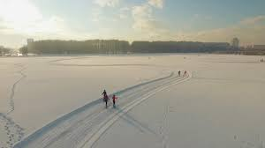
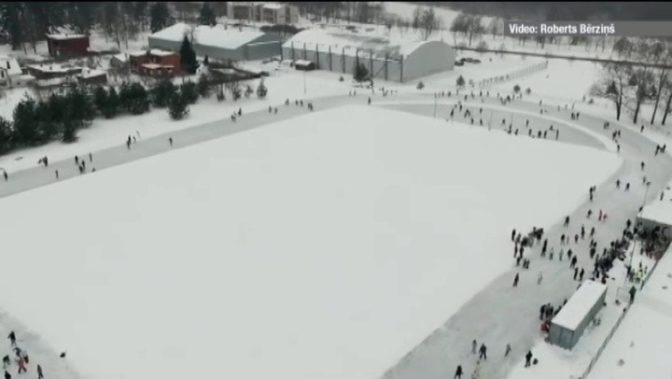
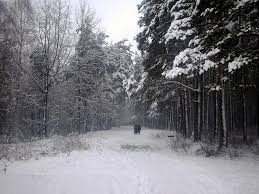

Vai tevi kādreiz ir nomocījis jautājums Kur doties ziemā?
Ja jā, tad šī ir tava laimīgā diena, jo esam sagatavojuši vislabāko Latvijas ziemas izpriecu vietu sarakstu tieši tev!
| Ziemas vieta | Skaistā vieta | Apraksts | Darba laiks | Vairāk informācijas |
|---|---|---|---|---|
| Lucavsalas slēpošanas trase |  | 1400 m gara trase pie pašas Daugavas ar skaistu skatu uz Rīgas pilsētu | katru dienu no 10.00 - 21.00 | Brīnišķīgā Lucavsala |
| Ventspils ledus halle |  | Brīnumana vieta, ko iemīlējuši gan vietējie, gan ceļotaji, gan bērni, gan pensionari | Pašlaik tā gan nav atverta, lai rūpetos par apmekletāju drošību | Brīnumainā Ventspils |
| Biķernieku mežs |  | Vieta, kur iespējams slēpot, braukt ar ragavieņām, slidot un priecāties. | Mežs ir atvērts visu laiku | Aizraujošais Biķernieku mežs |